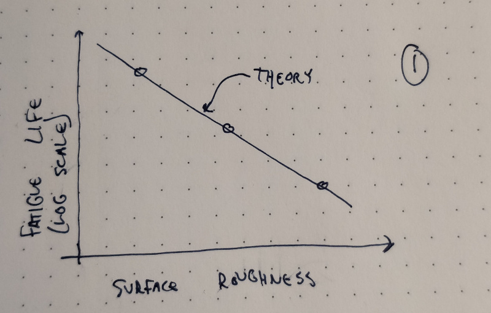
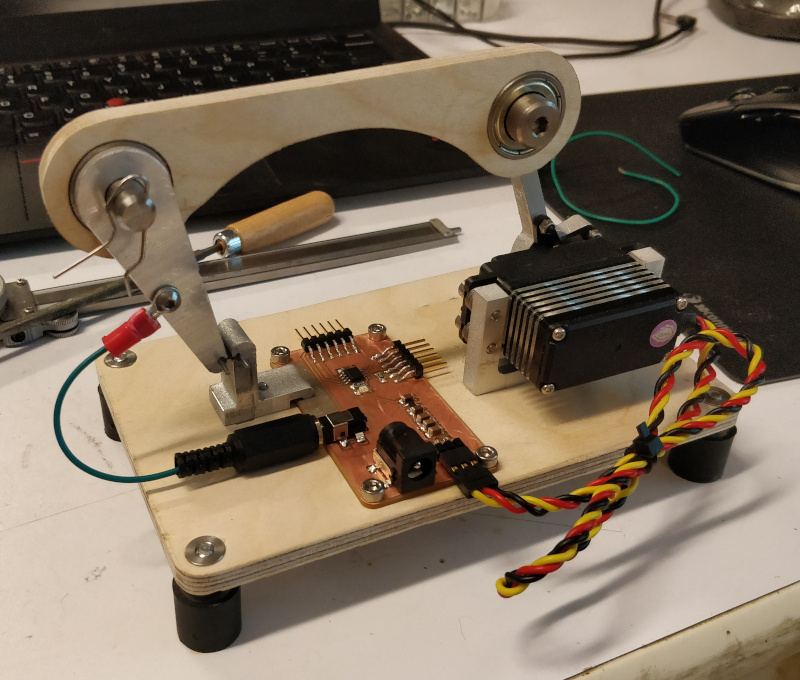
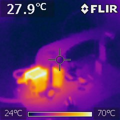
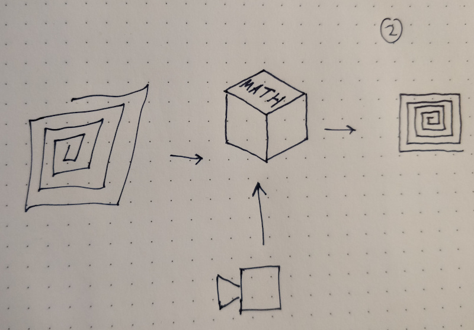
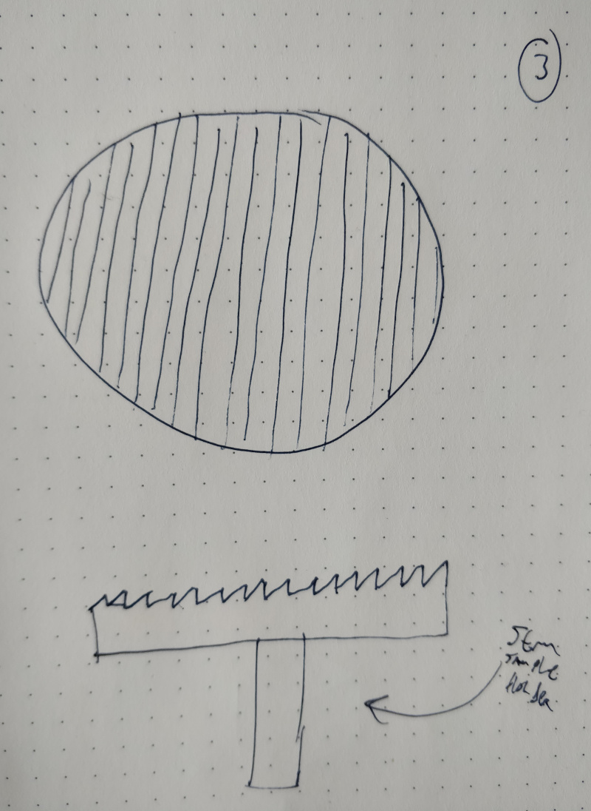
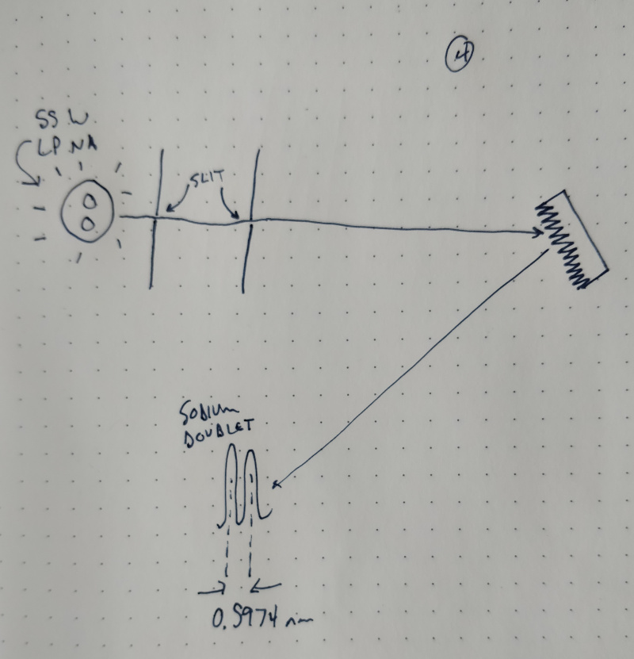

Sprint Planning
I found myself unexpectedly out of town for most of the last week and didn't make much progress on this project. The new bits you see below (in particular, the fatigue testing machine) really came from last week; I just didn't have time to document them before class, so they got pushed to this update. With a week left before the final, it's time for triage and sprint planning. After a good deal of consideration I intend to break this last push into four overlapping tasks.Fatigue Testing
After seeing surprisingly poor performance out of the 4411 Instron, I decided to build a dedicated fatigue tester using bits and pieces from around the shop. Since I spent a good bit of time machining the flexure test linkages, I designed the rest of the apparatus around these parts. Motive force is provided by an off-the-shelf high performance hobby servo, connected to the test linkage with a beam milled from plywood. This design choice serves a purpose beyond the aesthetic; by measuring resistance across the flexure I can determine when it breaks and stop the test, but to do so at least part of the mechanism must be a reliable insulator. The system is controlled by an ATtiny412 on a milled PCB, which tells the servo where to go, monitors the flexure sensing circuit, dumps test data through a serial port, and lights an LED to indicate continuity across the test part.

I still need to finalize the code to include cycle counting and serial data output, but a test routine suggests the system should allow a 25x testing rate improvement to 5 Hz:
I let the setup run over a lunch break and the servo heated up to ~70 C; hot, but hopefully survivable for my needs:

In the next week, I'd like to test the hypothesis presented in the graph above by characterizing the fatigue life of flexures with various surface roughness values. I have four samples left over from earlier runs that were cut using the highest roughness (i.e. fastest) wire-EDM settings; I'll get those started testing and fabricate samples at lower roughness values, and test those as well. Given time constraints, for now I'll save the samples for later analysis using SEM or confocal topography (which is a great excuse to learn how to use our confocal microscope). Again, given time constraints, I may also cut a sample or two out of non-superelastic alloy material (such as aluminum or stainless steel) to see how they compare under identical circumstances.
Distortion Correction
As discussed previously, nominal inverse kinematics got the machine most of the way to rectilinearity. To sort out the last bits of distortion (wherever they may have originated), I built, calibrated, and characterized a rather elaborate image acquistion system to provide input data for an optimization routine. Since fatigue testing is mostly automated beyond sample changing and data recording, once I get the apparatus started I will wire-EDM another set of "rough" flexures to rebuild the existing 3-RRR CPM. While this kicks the fatigue can down the road, I can still expect to get 30k+ cycles out of each joint which should be more than enough to gather the data I need for distortion correction. At some point, I still need to dig further into the cube at the center of the diagram above; more on that later, I suppose.
Ruling a Grating
An interesting test case (and one that I naively committed to at some point during the semester) for the machine is to produce a ruled diffraction grating. Since the current 3-RRR CPM is based on the original actuator test design, I'm a bit shy of the resolution needed to produce a typical 300-600 line/mm grating. In those early tests, each motor step yielded ~30 um displacement. Assuming some margin for distortion correction but some ability to micro-step, I still hope to be able to reliably scribe lines at ~30 um spacing. Paired with a suitably aggressive blaze angle, this matches the resolution of some commercial Echelle gratings, which are designed to operate at high orders with correspondingly narrow free spectral ranges. Rather than fabricate a full Z-axis, I'll scribe the pattern on a 10 mm round aluminum SEM sample holder and simply toolpath the return strokes outside the diameter of the target. For tooling, I have a few extremely sharp (0.025 mm tip radius) 55-degree carbide inserts that I can further sharpen to a point and quickly mount on a cantilever/micrometer as I did with the sharpened bolts. The angle is a bit low and I'm worried about chipping, so I may also try to machine a tool out of single-crystal CVD diamond.
Measuring the Sodium Doublet
As soon as I have something that vaguely resembles a diffraction grating, I'll probably start exposing it to all sorts of available light sources so I can take neat pictures of structural color. But if all goes well (and faster than expected), it would be neat to try to characterize the performance of the diffraction grating. A previous student bought a few 55 watt low-pressure sodium lamps; they're blindly bright streetlight bulbs that provide a great monochromatic light source at a low cost. Notably, the "monochromatic" yellow-orange principle sodium emission line is actually a doublet with peaks at 588.9950 and 589.5924 nm, caused by the slight energy difference between the 3p(3/2) and 3p(1/2) spin states. It would be neat to be able to differentiate these peaks visually; if I can physically measure the distance between the lines as projected onto a screen at a known distance from the grating, I can then calculate the actual spacing of the ruled pattern which would be a neat exercise in metrology loop-closing.